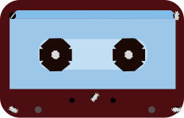

Retold: A game of Telephone
A collaborative listening experience inspired by the classic game Telephone.
About
Retold is a collaborative listening experience inspired by the classic game Telephone.
Every recording is heard only once before being recreated from memory by another visitor.
After the third listener, the recording disappears forever.
Every voice exists only through the memory of another person.

Speak
Where do you go to be yourself?


reflect/traces
Leave a trace.